Context
Civi believes safety is a right for everyone, and aligns information and technology to help individuals and communities stay better informed and safer.
Civi's goal is to become the number one security app in Latin America by empowering tens of millions of users to improve their personal security.
The company started focusing first on São Paulo, Brazil. Beyond my product design work, I was also responsible for bringing this message to life across video, social media, and every other marketing touchpoint — check more about my work at Civi here.
Videos
Video was one of the main ways I brought Civi's story and features to life — from ads to explainer content to the weekly recaps that kept the app's community engaged.
Ads video (2021)
I created this short video presenting Civi's main idea and functionalities, using Adobe After Effects and some free video resources.
News summary videos (2021)
Every week, the collection team gathered the most relevant events published in the app, and I turned them into video summaries for social media. These videos showed that the app was active, and attracted new users organically as people shared them on Instagram and TikTok.
Tool: Adobe After Effects.
Sentinels Program video (2020)
In the app's early days, we didn't have many users posting events, and without events we couldn't attract new ones. Our solution was the Sentinels Program — created to attract drivers, security guards, garbage collectors, and other people who spend most of their time circulating through the city. Civi paid for each event sent through the app and validated by our internal team.
I made this video to explain and promote the program, using Adobe After Effects and some free video resources.
First concept video (2019)
Civi's earliest concept video, made to explain the idea before the app existed — also created with Adobe After Effects and some free video resources.
Pitch decks
I designed our pitch deck presentations, showing Civi's goals, context, challenges, proposal, and monetization strategy. These slide presentations were presented to our business partners and potential investors.
Problem
Solution
What we built
KPI's, data and strategies
Monetization and valuation
Website
I created the Civi website using SquareSpace, and I was responsible for keeping it up to date.
Newsletter & surveys
I created surveys that were sent to our users to collect insights about the product, and newsletters to share our incentive programs — the examples below were created using MailChimp and Google Forms.
I also had a role as a Product Designer and UX/UI Designer at Civi, working on the product's strategy, wireframes, interface, and design system — check more about that work here →
Social media
From 06/2020 to 04/2021, I was also responsible for designing posts and content for Civi's social media channels — Instagram, Facebook, LinkedIn, TikTok, and WhatsApp. I created videos, animations, infographics, and illustrations.
Illustrations
For the illustrations, I often used free vector illustrations I found online and adapted them to our publications — changing colors and combining images depending on the context to make them work with Civi's visual identity.
Instagram feed
A look at how the posts came together as a continuous feed on Civi's Instagram profile.
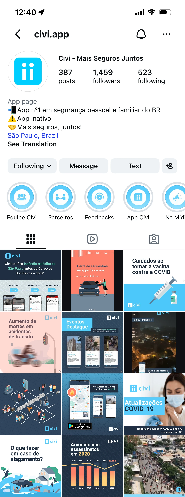
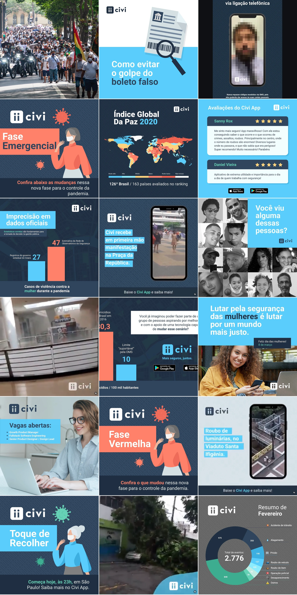
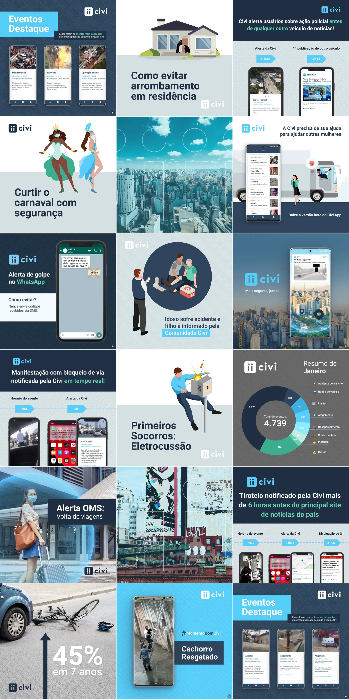
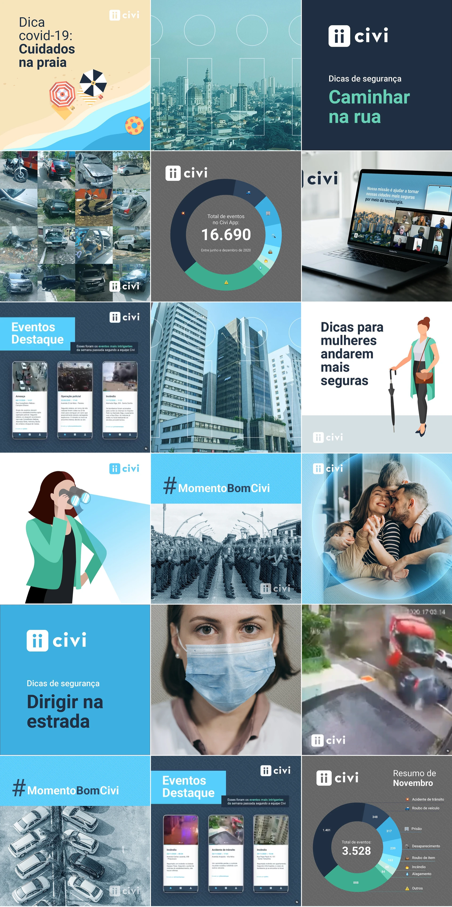
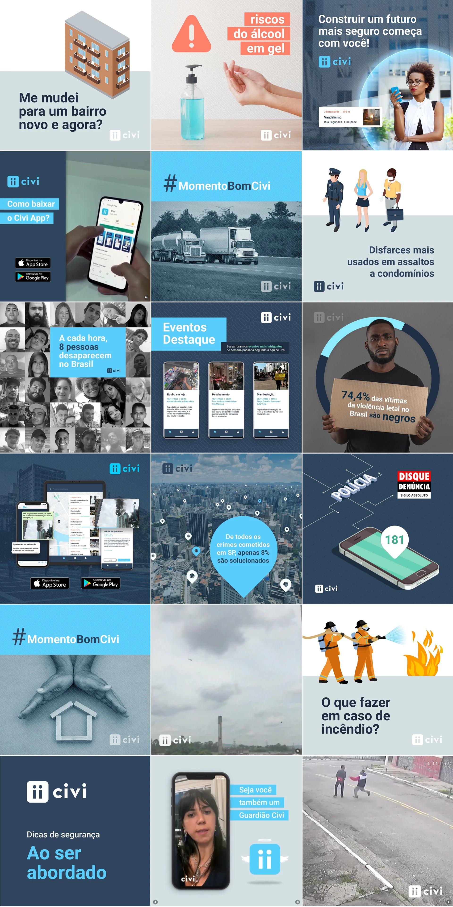
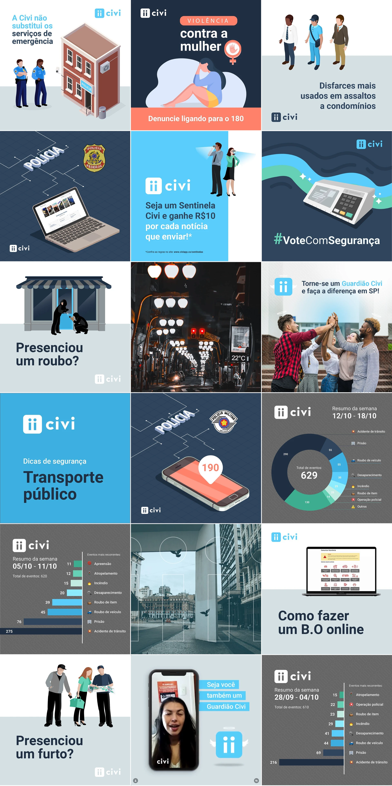
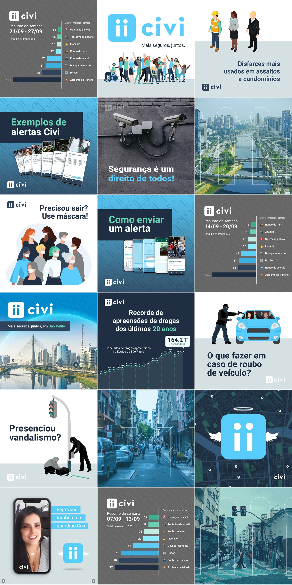
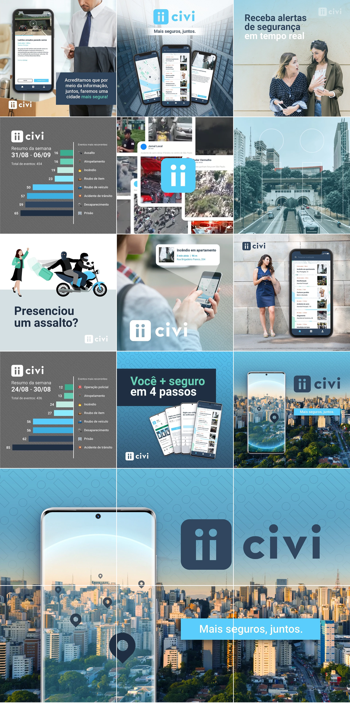
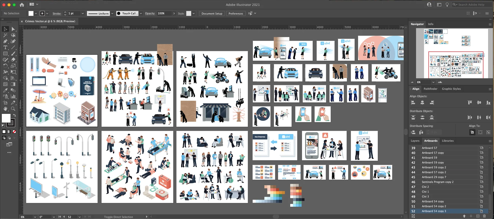
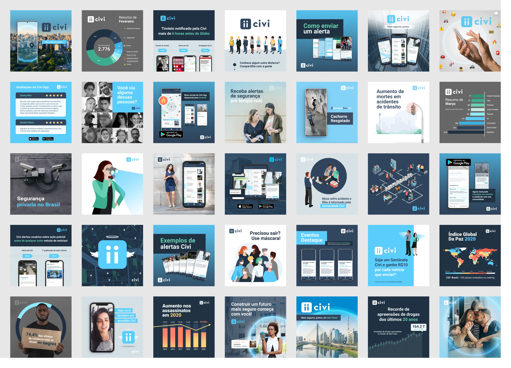
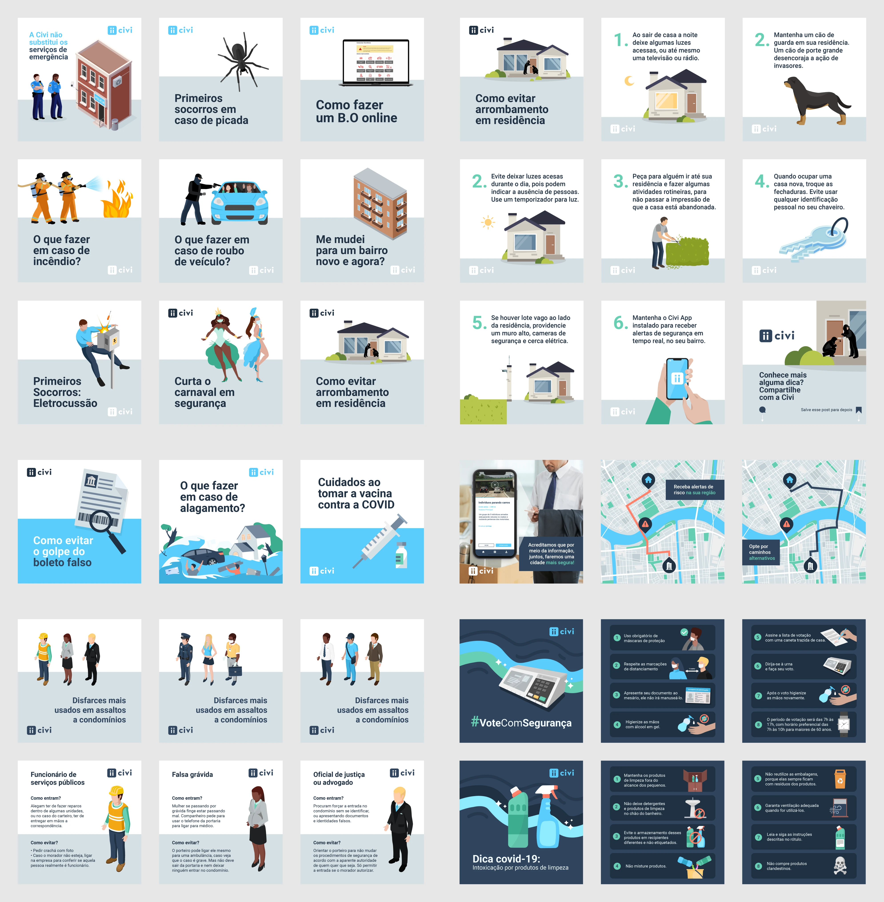
Social media planner
I also created a simple calendar system to help plan and organize the social media publications — useful for working with multiple collaborators at once, linking files and saving all the details needed for each publication. Tool: Google Slides.
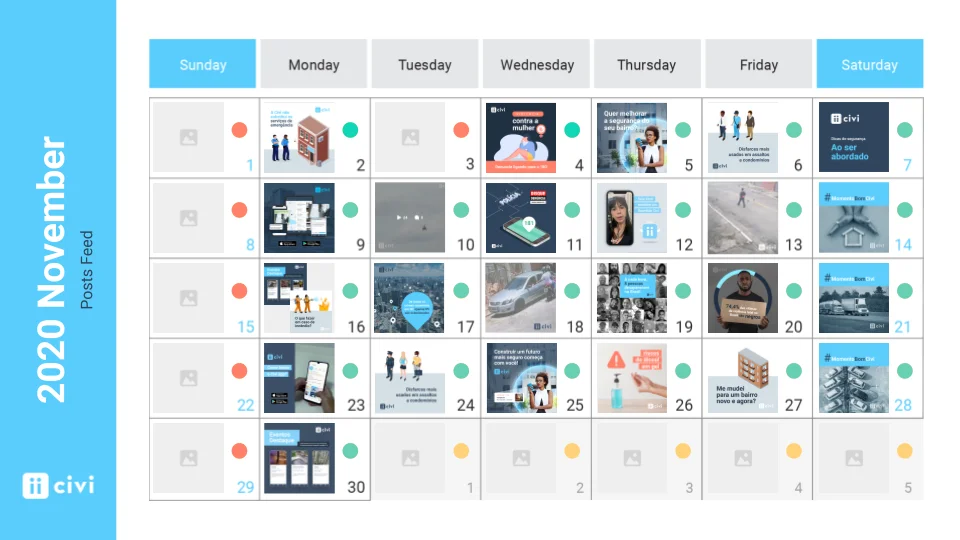
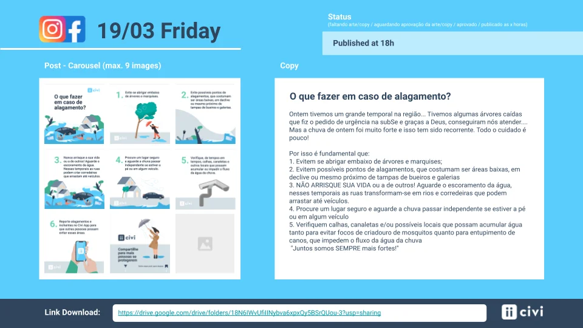
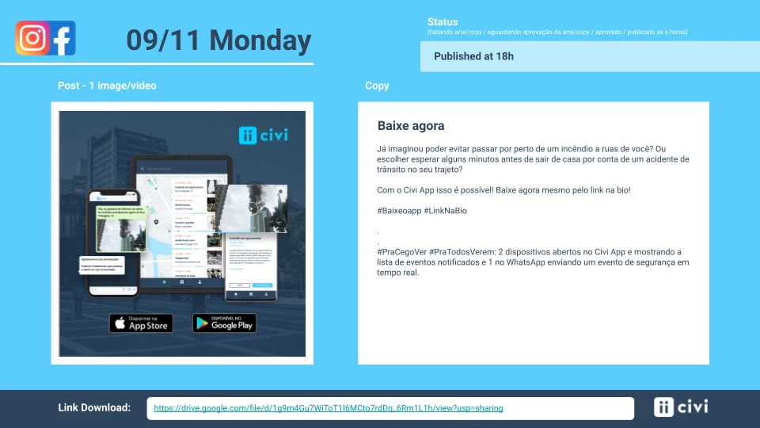